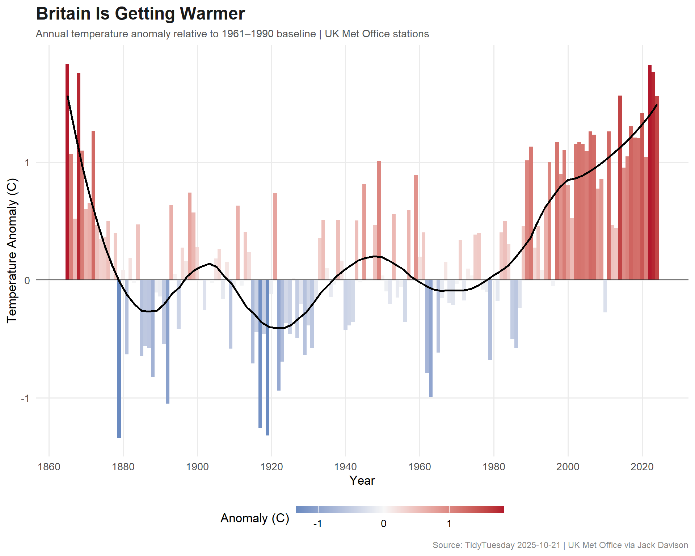
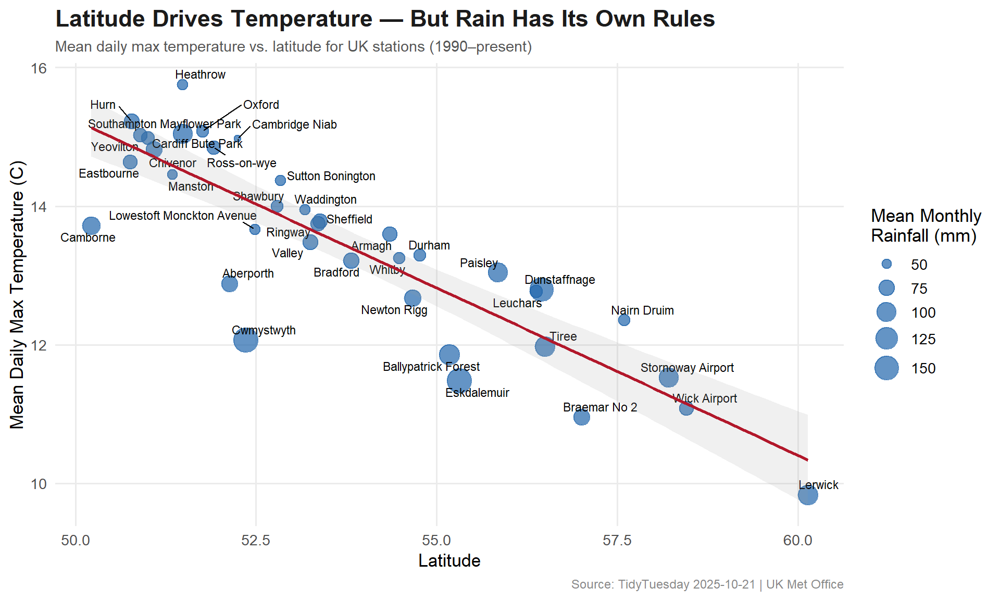

170 years of UK weather station data — tracking how temperatures have risen, rainfall patterns have shifted, and sunshine hours have changed across Britain.
Monthly historical meteorological measurements from 37 UK Met Office stations, spanning from 1853 to 2024. Data includes temperature, rainfall, sunshine, and frost days. The Met Office, established in 1854, is the UK’s national weather service.
Which UK regions rank highest for rainfall, sunshine, and temperature?
Which specific years showed extreme meteorological patterns?
How have monthly weather patterns evolved year-to-year?
Loading necessary packages
My handy booster pack that allows me to install (if needed) and load my usual and favorite packages, as well as some helpful functions.
raw <- tidytuesdayR::tt_load('2025-10-21')weather <- raw$historic_station_metstations <- raw$station_meta
Exploratory Data Analysis
The my_skim() function is a modified version of the skimr::skim() function that returns the number of missing data points (cells as NA) as well as the inverse (e.g.: number of rows that are notNA), the count, minimum, 25%, median, 75%, max, mean, geometric mean, and standard deviation. It also generates a little ASCII histogram. Neat!
# Climate stripes inspired paletteggplot(annual_temp, aes(x = year, y = anomaly)) +geom_col(aes(fill = anomaly),width =1 ) +geom_hline(yintercept =0, color ="#333333", linewidth =0.5) +geom_smooth(method ="loess", se =FALSE, color ="#000000", linewidth =1, span =0.3) +scale_fill_gradient2(low ="#2166AC",mid ="#F7F7F7",high ="#B2182B",midpoint =0,name ="Anomaly (C)" ) +scale_x_continuous(breaks =seq(1860, 2020, 20)) +labs(title ="Britain Is Getting Warmer",subtitle ="Annual temperature anomaly relative to 1961–1990 baseline | UK Met Office stations",x ="Year",y ="Temperature Anomaly (C)",caption ="Source: TidyTuesday 2025-10-21 | UK Met Office via Jack Davison" ) +theme_minimal(base_size =13) +theme(plot.title =element_text(face ="bold", size =18, color ="#1B1B1B"),plot.subtitle =element_text(size =11, color ="#555555"),plot.caption =element_text(size =9, color ="#888888"),legend.position ="bottom",panel.grid.minor =element_blank() ) +guides(fill =guide_colorbar(barwidth =15, barheight =0.5))

ggplot(station_summary, aes(x = lat, y = mean_tmax)) +geom_point(aes(size = mean_rain), color ="#2166AC", alpha =0.7) +geom_text_repel(aes(label = station_name), size =3, max.overlaps =12) +geom_smooth(method ="lm", se =TRUE, color ="#B2182B", linewidth =1, alpha =0.15) +scale_size_continuous(name ="Mean Monthly\nRainfall (mm)", range =c(2, 8)) +labs(title ="Latitude Drives Temperature — But Rain Has Its Own Rules",subtitle ="Mean daily max temperature vs. latitude for UK stations (1990–present)",x ="Latitude",y ="Mean Daily Max Temperature (C)",caption ="Source: TidyTuesday 2025-10-21 | UK Met Office" ) +theme_minimal(base_size =13) +theme(plot.title =element_text(face ="bold", size =17, color ="#1B1B1B"),plot.subtitle =element_text(size =11, color ="#555555"),plot.caption =element_text(size =9, color ="#888888"),legend.position ="right",panel.grid.minor =element_blank() )

Final thoughts and takeaways
The UK Met Office dataset is one of the longest continuous meteorological records in the world, and the warming signal is unmistakable. Every decade since the 1990s has been warmer than the 1961–1990 baseline, with recent years showing anomalies exceeding +1°C. This is entirely consistent with global climate projections.
The latitude gradient tells the familiar story — southern stations are warmer — but rainfall breaks the pattern. Western and upland stations receive far more precipitation due to prevailing Atlantic weather systems, regardless of latitude. This maritime influence makes UK climate uniquely complex for such a small geographic area.
Note
The 1961–1990 baseline period is the World Meteorological Organization’s standard reference for climate normals, though WMO has since added a 1991–2020 reference period. Using the older baseline makes the recent warming trend more visually dramatic — but it’s the standard, not a rhetorical choice.